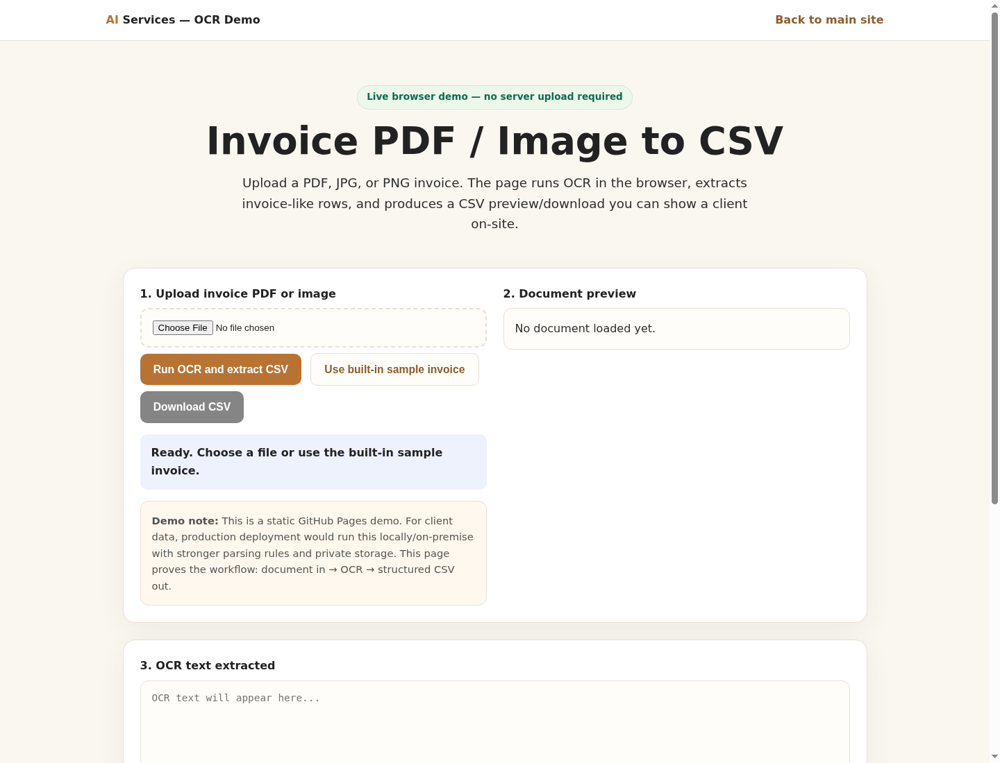
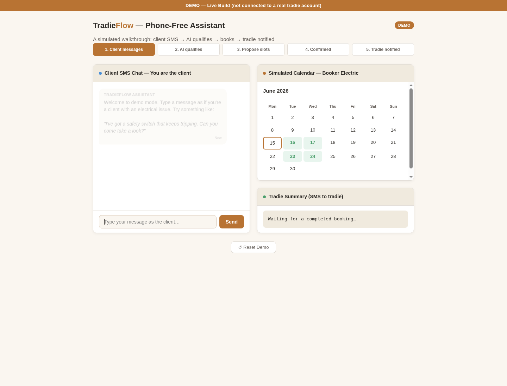
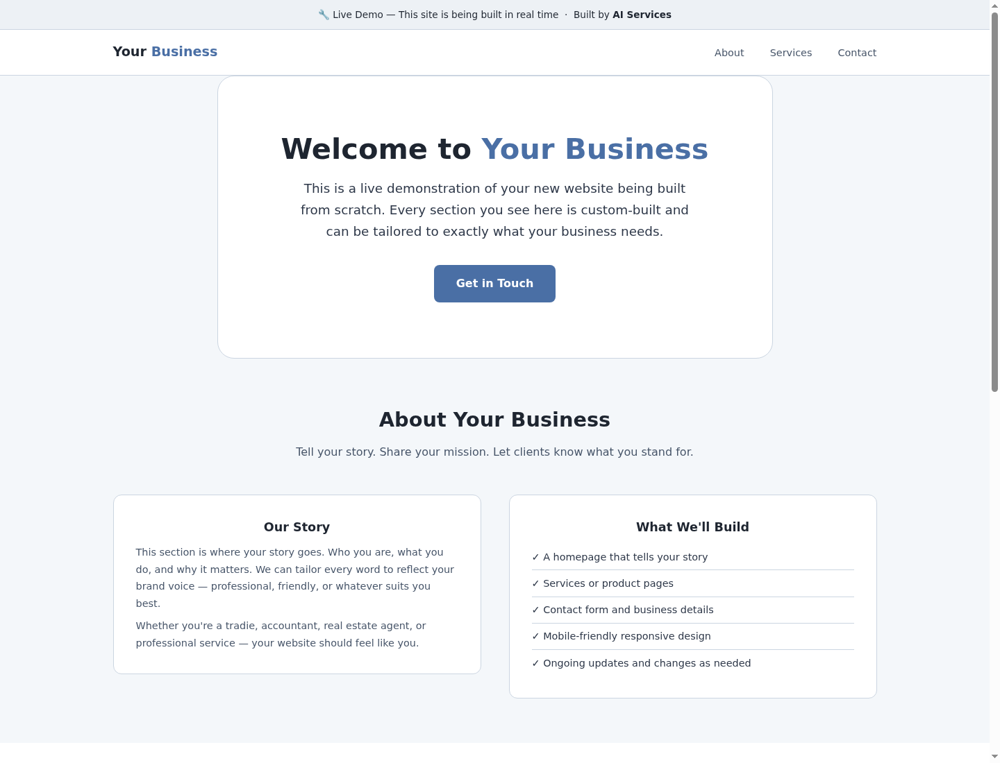

Small systems, specific jobs.
There is no off-the-shelf “AI package” here. The work is shaped around the job that actually needs doing.
I help small businesses turn repetitive documents, messages and hand-offs into useful web tools, automation and working prototypes.
Send a short outline and a non-sensitive example. Simon will reply with an honest view on whether a small build is a sensible next step.
What gets built
Start with the workflow rather than a tool. The aim is a focused first version that can be tried with real documents, messages or customers.
There is no off-the-shelf “AI package” here. The work is shaped around the job that actually needs doing.
Document extraction, inbox triage, structured data capture and repetitive admin flows.
Small applications for queues, client intake, scheduling, reporting and operational control.
Clear public websites and landing pages that explain a real service without generic software language.
Practical help connecting, testing and improving the systems already in use.
Working examples
These are public demonstrations of the kind of focused problem-solving a small build can support. They are demos, not claims of a one-size-fits-all result.
Built around a real social session: player queue, levels, court assignments, timers and match flow in one browser tool.
Context: a practical way to replace ad-hoc court allocation with a shared operating view during a busy session.
Open the demo
A client-side proof of concept for reading invoice files and turning extracted line items into downloadable spreadsheet data.
Context: demonstrates the workflow to test before committing to a deeper accounting or document integration.
Open the demo
A concept for sole traders and small trade businesses centred on missed enquiries, job details and follow-up without forcing a heavy CRM process.
Context: a conversation-led prototype to make the next response clearer when the team is on the tools.
Open the demo
A small public demonstration of how a business page can be structured, edited and improved.
Context: useful for discussing tone, hierarchy and a practical first release before a full website scope.
Open the demoFeedback from a live test
Anonymous feedback from people who reviewed the tennis app in the context of social sessions. Role descriptions are used rather than names.
“First impression is damn good, definitely keen for a deeper dive.”
“I had wondered how easy a web app could be developed for us, so thanks for taking the plunge on this.”
“Looks impressive.”
A practical process
The work should earn its complexity. A short cycle with real material is more useful than a polished concept that never meets the actual workflow.
Map the hand-off, repetition or decision that is slowing work down.
Create a focused prototype or page that demonstrates the core job.
Try it with representative files, messages and tasks rather than idealised examples.
Refine the parts that prove useful: reliability, flow, copy, handover or next integration.
Good automation is not always the answer. The right outcome may be a clearer process, a simpler website, a spreadsheet improvement, or deciding not to automate yet.
Email a short description of the current process and the outcome you want. For an initial conversation, please do not send passwords, full client records or sensitive documents.